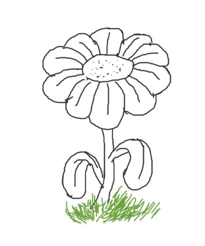
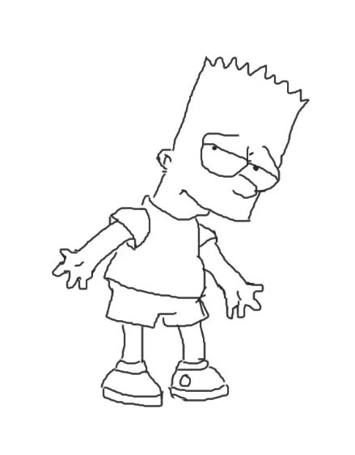

Save 02 - Jester / Complete / Digital · Illustration · Line Art · Doodles
ARTWORKS
Five artworks by Jester Marc Merino spanning Digital, Illustration, Line Art, and Doodles — bringing together expressive botanical forms, stylized character linework, and playful sketches.
01 / The collection
FIVE WORKS,
FOUR CATEGORIES.
Every piece is presented at its full, uncropped proportions. Click any plate to inspect the linework up close.

A large, bumpy-centered flower with thick, pillow-like petals, two droopy leaves on a curved stem, and a patch of green scribbled grass at the base.

An uncolored tulip with overlapping, crown-like petals on top, a tall stem, and long, pointed leaves curving out from the sides.

A playful cartoon character sketch rendered in crisp black outlines — leaning forward with expressive half-lidded eyes, spiky silhouette, and loose gesturing posture.

A clean side-profile anime portrait featuring long flowing hair, oversized over-ear headphones, and a quiet resting pose built purely from confident contour lines.

A single blooming rose drawn in crisp, unshaded outlines — balancing layered spiraling petals against a curved stem and three finely serrated leaves.
02 / Line & simplicity
CONTOUR FIRST.
NO CLUTTER.
Across all five pieces, the drawing relies on clean, expressive outlines rather than heavy shading — letting petal curves, character attitude, and silhouette carry the whole frame with minimal strokes.
Credits
MADE BY
JESTER MARC MERINO.
- Artist: Jester Marc Merino (Save 02 - Jester).
- Pieces: Big Flower, Tall Tulip, Bart Simpson, Anime Girl with Headphones, and Rose.
- Categories: Digital, Illustration, Line Art, and Doodles.